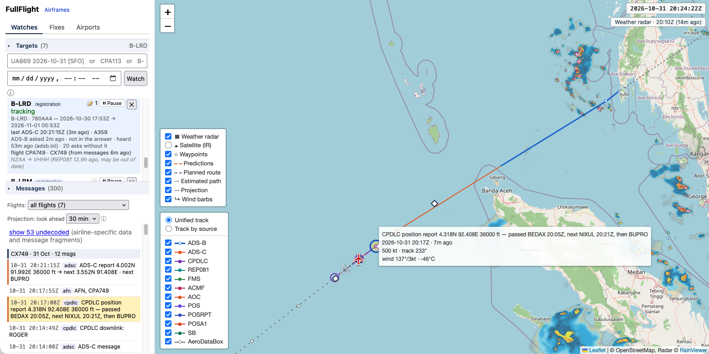

Follow a particular aircraft all the way, including the long stretches over the oceans where ADS-B goes quiet. FullFlight joins live ADS-B positions with the ACARS, ADS-C and CPDLC reports the aircraft sends by satellite and radio, and draws them as one track.

ADS-B from adsb.lol and adsb.fi, plus position reports decoded from ADS-C, CPDLC, FMS, POS and other datalink messages (via airframes.io and libacars). Each source keeps its colour where the line changes hands, or switch to a line per source.
A long silence is bridged by a dotted estimate that follows the filed route, never by a solid line. Reports with impossible speeds or unverified times are flagged and left out of the line.
A projection dead-reckons the aircraft from its latest trustworthy fix and shows where it should be, and where its own report says it is heading, with the waypoints it names.
RainViewer radar and NASA GIBS infrared satellite imagery over the map, and a wind barb on every report that gives wind direction and speed.
History is divided into the flights the aircraft flew, from the flight numbers in its messages and on its ADS-B callsign, with origin and destination where the aircraft reports them.
A timeline of everything received, decoded where possible and kept raw always. Click a dot to find its message; click a message to see its dot.
FullFlight is a single Go program with a SQLite database and a web page. It runs on your own machine and watches the aircraft you ask it to.
brew install cmake pkgconf jansson # macOS make libacars # builds libacars into third_party/ make build # -> bin/fullflight cp config.example.yaml config.yaml # edit; then: bin/fullflight -config config.yaml
Then type a registration, hex code, or flight number and date into the page. The README describes the watch list, the data sources and each map layer in detail.